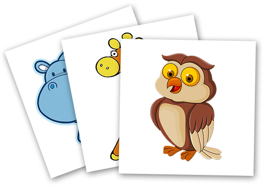

Карточки ПЕКС
Расстройства аутичного спектра, к сожалению, в наше время стало не такой уж редкостью. У детей с данным диагнозом в разной степени затруднены коммуникационные способности с окружающими. Им сложно "рассказать" о своих желаниях или потребностях окружающим их людям любым способом, не только вербальным (голосом). Если родные их зачастую понимают, то другие люди нет. Поэтому в обществе таким детям тяжело, что выплескивается в истерики, замкнутость или агрессию.

Альтернативным способом невербального общения сложных детей с окружающими являются карточки Пекс. Карточки Пекс представляют из себя простые картинки на бумаге, картоне или тонком пластике, на которых изображены предметы или действия повседневного характера. На любое желание, которое трудно выразить словами у особенного ребенка есть карточка которая однозначно говорит о том что просит или хочет сказать ребенок. Карточки Пекс понятны обоим сторонам диалога. Овладев коммуникацией через карточки Пекс ребенку проще рассказать о том что он хочет, на первых порах это уменьшает нервное напряжение, в перспективе помогает быстрее овладеть нормальной речью. Карточки Песк это простой и очень эффективный способ помочь детям с РАС, нарушением слуха, ДЦП и прочими неврологическими расстройствами.
Карточки Пекс не сложно изготовить в домашних условиях, можно скачать или изготовить ряд тематических изображений одинакового размера, распечатать в цвете на плотном картоне и заламинировать чтобы карточки служили дольше. Так же для хранения карточек надо иметь специальный альбом.
Если по каким то причинам вы не имеете возможности или желания заниматься изготовлением карточек самостоятельно, вы можете заказать их на нашем сайте. Вы можете самостоятельно выбрать наборы карточек Пекс из предложенных или с специальном Редакторе сделать индивидуальные на основе ваших фотографий или рисунков.
Карточки Пекс не сложно изготовить в домашних условиях, можно скачать или изготовить ряд тематических изображений одинакового размера, распечатать в цвете на плотном картоне и заламинировать чтобы карточки служили дольше. Так же для хранения карточек надо иметь специальный альбом.
Если по каким то причинам вы не имеете возможности или желания заниматься изготовлением карточек самостоятельно, вы можете заказать их на нашем сайте. Вы можете самостоятельно выбрать наборы карточек Пекс из предложенных или с специальном Редакторе сделать индивидуальные на основе ваших фотографий или рисунков.